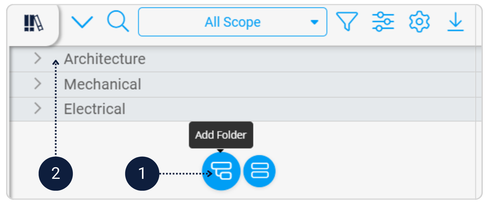
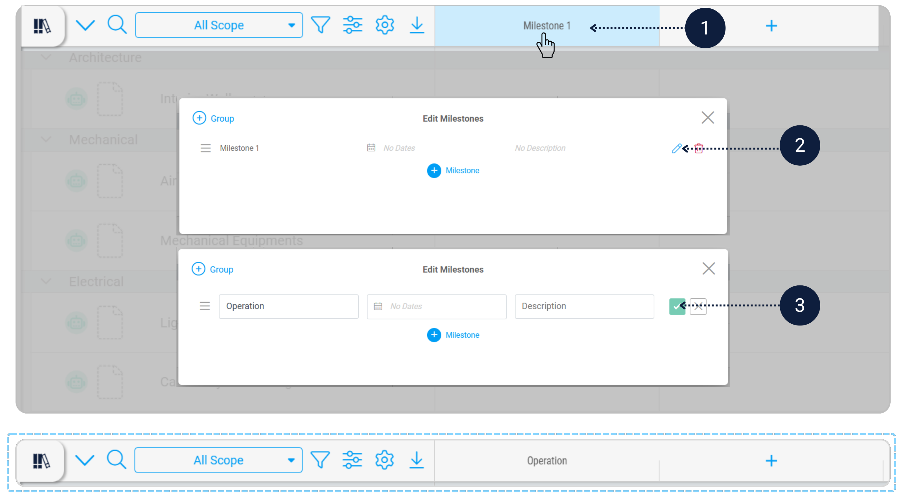
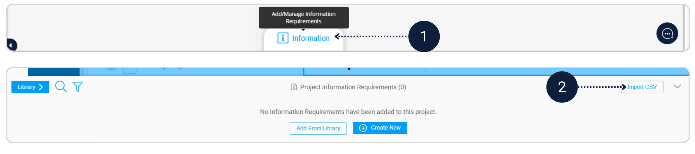

Your EIR explains what the Owner needs. Now you will structure those requirements in Scope so the project team can clearly see who delivers what - and so the requirements can be issued as part of a tender package.
In the Scope module, create three discipline folders: Architecture, Mechanical, Electrical.
Add asset tasks under each discipline folder to represent the maintainable assets identified in the EIR.
[Image of work breakdown structure hierarchy]Rename Milestone 1 to Operation.
Click Information at the bottom and import the CSV file Plannerly Assignment Template.csv to load the information requirements.
Assign the relevant information requirements to each task in the Operation column.
If you want to add images to your tasks, click the AI (robot) icon on the task row to generate an image for that specific row. This step is optional.
The information requirements for each asset have now been defined and structured in Scope. Complete the remaining sections in this template to finalise the EIR, as this document will form part of the tender/contract information.